library(Seurat)
library(umap)
library(ggpubr)Mapping + counting (spaceranger)
we downloaded the data from https://www.10xgenomics.com/datasets/fresh-frozen-visium-on-cytassist-mouse-brain-probe-based-whole-transcriptome-profiling-2-standard
Fresh Frozen Visium on CytAssist: Mouse Brain, Probe-Based Whole Transcriptome Profiling
Setup
Specify input directories and files.
countFolder <- "raw_data"
analysisFolder <- "analysis"
name1 <- "Anterior"
name2 <- "Posterior"
dir.create(analysisFolder, showWarnings = FALSE)Load data into an seurat object
seu1 <- Load10X_Spatial(file.path(countFolder, name1),
filename = "filtered_feature_bc_matrix.h5", slice = name1
)
seu2 <- Load10X_Spatial(file.path(countFolder, name2),
filename = "filtered_feature_bc_matrix.h5", slice = name2
)Quality control
Library size versus detected genes
A high number of detected genes can potentially indicate doublets. However, depending on the celltype composition in your sample, it may also reflect true biological variation among cell types.
nCount_Spatial: total number of counts for a spot (i.e. library size)
nFeature_Spatial: total number of genes expressed in a spot
FeatureScatter(seu1,
feature1 = "nCount_Spatial",
feature2 = "nFeature_Spatial"
) +
labs(title = name1) +
NoLegend()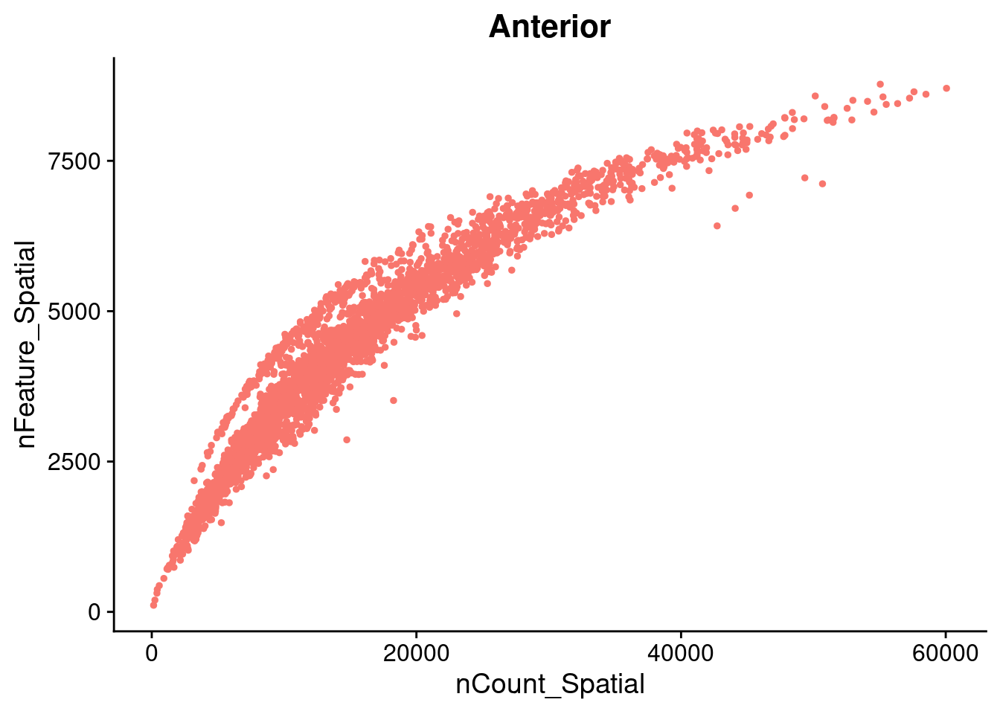
VlnPlot(seu1,
features = "nFeature_Spatial"
) +
labs(title = name1, y = "nFeature_Spatial", x = "") +
NoLegend()Warning: Default search for "data" layer in "Spatial" assay yielded no results;
utilizing "counts" layer instead.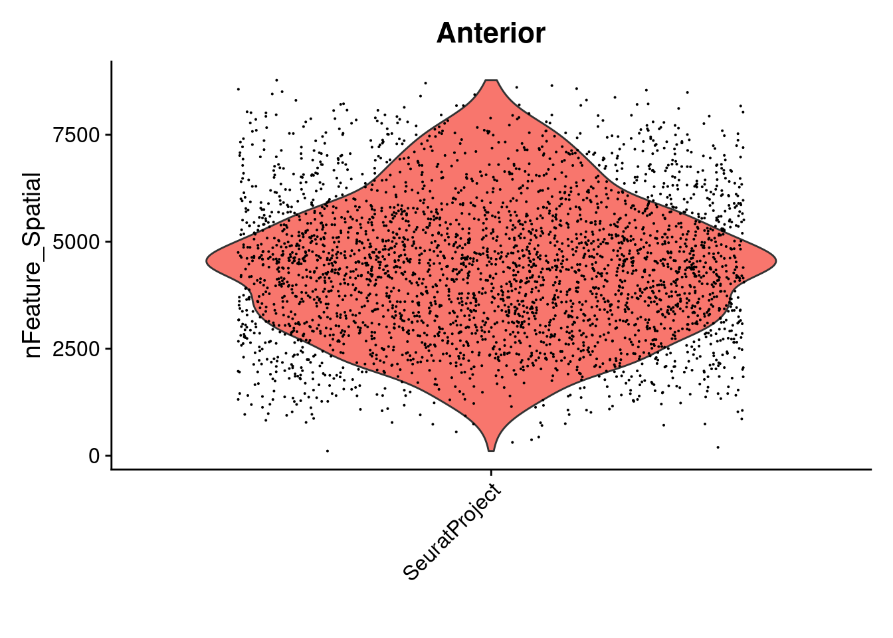
FeatureScatter(seu2,
feature1 = "nCount_Spatial",
feature2 = "nFeature_Spatial"
) +
labs(title = name2) +
NoLegend()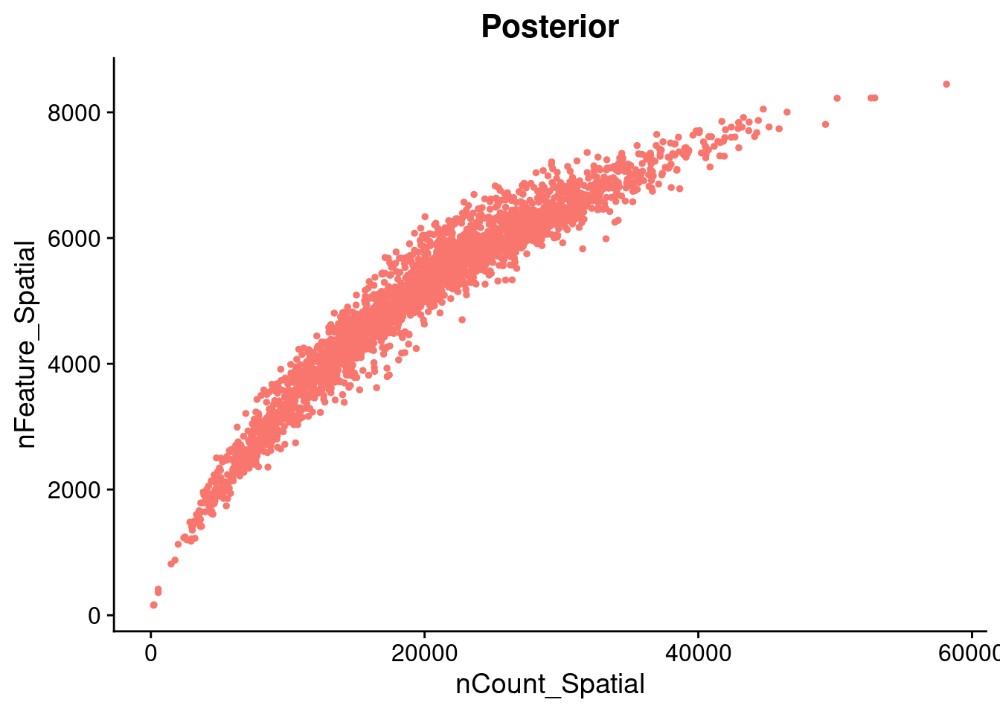
VlnPlot(seu2,
features = "nFeature_Spatial"
) +
labs(title = name2, y = "nFeature_Spatial", x = "") +
NoLegend()Warning: Default search for "data" layer in "Spatial" assay yielded no results;
utilizing "counts" layer instead.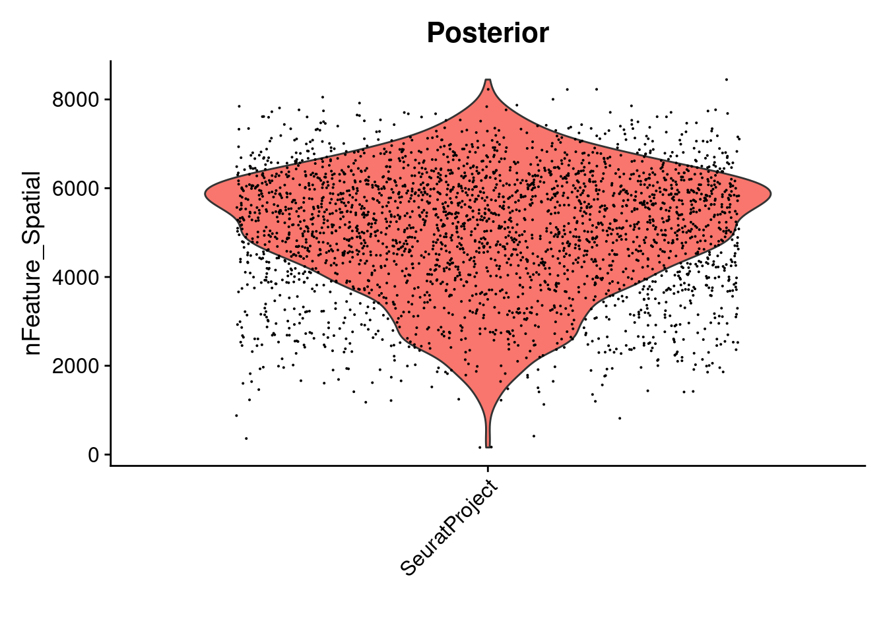
Percent of mitochondrial reads
Low quality/dying cells often exhibit extensive mitochondrial contamination. Spots with a high proportion of mitochondrial reads will be removed.
seu1 <- PercentageFeatureSet(seu1,
pattern = "^MT-|^Mt-|^mt-",
col.name = "percent.mt"
)
VlnPlot(seu1, features = "percent.mt") +
labs(title = name1, y = "percent of mitochondrial reads", x = "") +
NoLegend()Warning: Default search for "data" layer in "Spatial" assay yielded no results;
utilizing "counts" layer instead.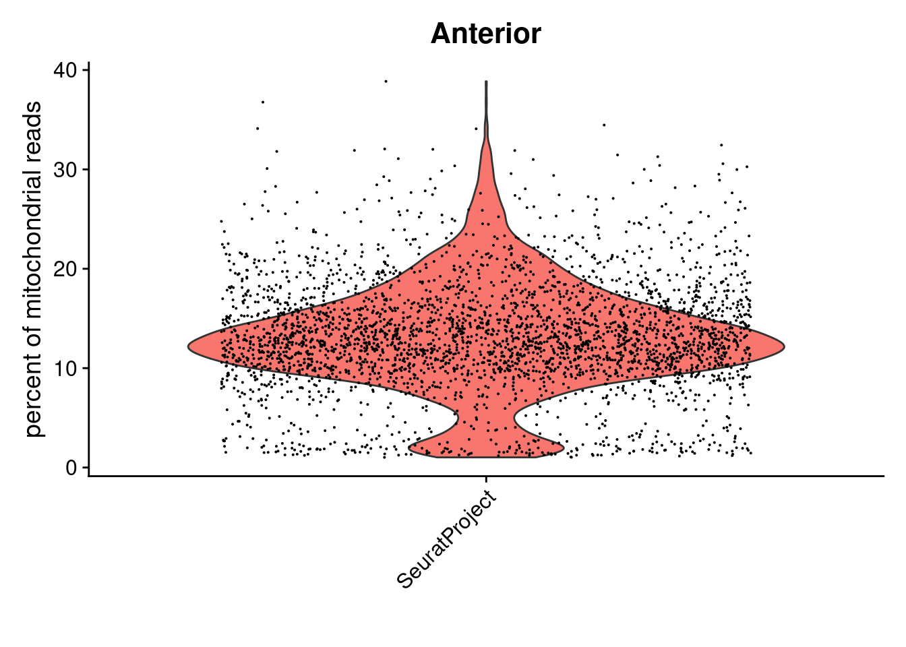
SpatialFeaturePlot(seu1, features = "percent.mt") + labs(title = name1)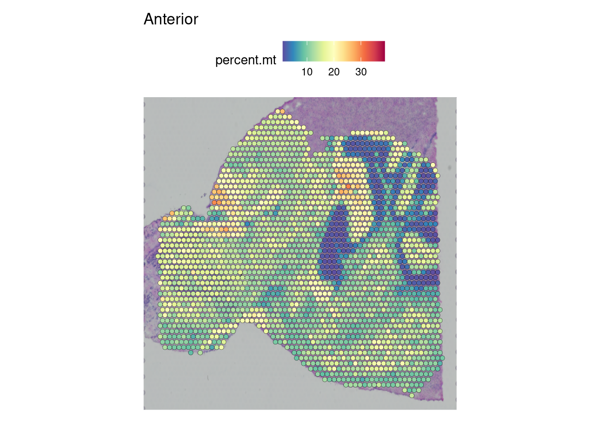
seu2 <- PercentageFeatureSet(seu2,
pattern = "^MT-|^Mt-|^mt-",
col.name = "percent.mt"
)
VlnPlot(seu2, features = "percent.mt") +
labs(title = name2, y = "percent of mitochondrial reads", x = "") +
NoLegend()Warning: Default search for "data" layer in "Spatial" assay yielded no results;
utilizing "counts" layer instead.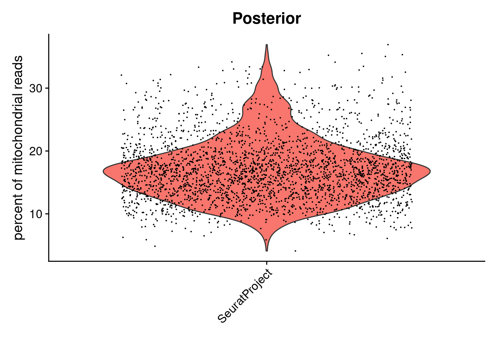
SpatialFeaturePlot(seu2, features = "percent.mt") + labs(title = name2)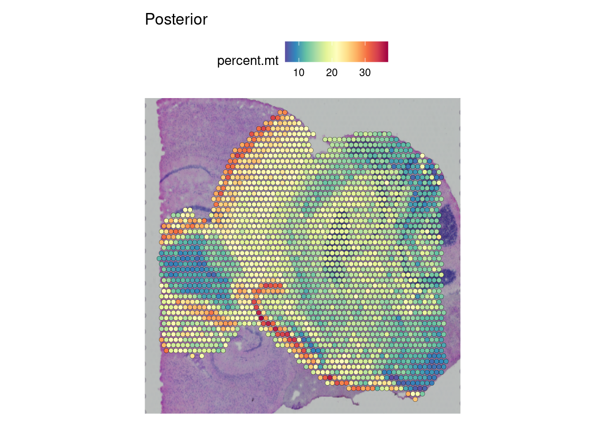
Percent of ribosomal protein reads
The fraction of reads from ribosomal proteins varies based on cell type and overall cell health. Higher levels of RNA degradation may lead to more templating of ribosomal proteins.
seu1 <- PercentageFeatureSet(seu1,
pattern = "^RP[SL]|^MRP[SL]|^Rp[sl]|^Mrp[sl]|^rp[sl]|^mrp[sl]",
col.name = "percent.rp"
)
VlnPlot(seu1, features = "percent.rp") +
labs(title = name1, y = "percent of ribosomal reads", x = "") +
NoLegend()Warning: Default search for "data" layer in "Spatial" assay yielded no results;
utilizing "counts" layer instead.
SpatialFeaturePlot(seu1, features = "percent.rp") + labs(title = name1)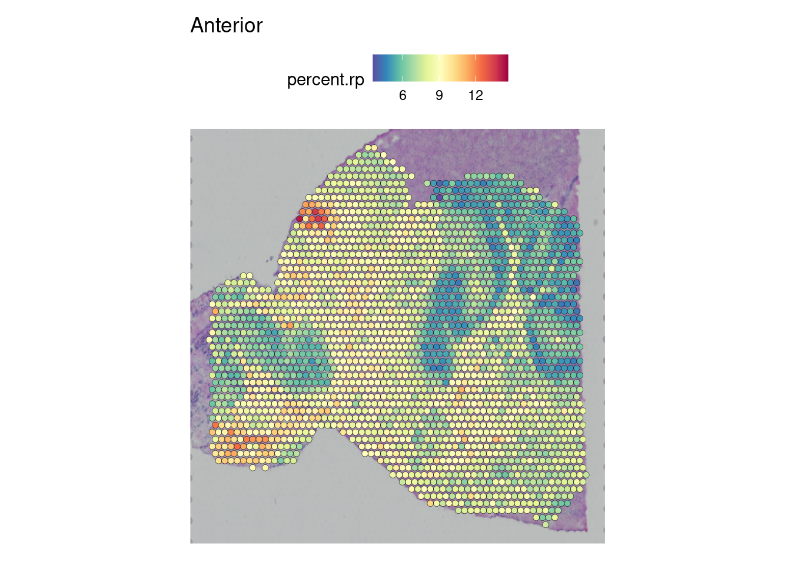
seu2 <- PercentageFeatureSet(seu2,
pattern = "^RP[SL]|^MRP[SL]|^Rp[sl]|^Mrp[sl]|^rp[sl]|^mrp[sl]",
col.name = "percent.rp"
)
VlnPlot(seu2, features = "percent.rp") +
labs(title = name2, y = "percent of ribosomal reads", x = "") +
NoLegend()Warning: Default search for "data" layer in "Spatial" assay yielded no results;
utilizing "counts" layer instead.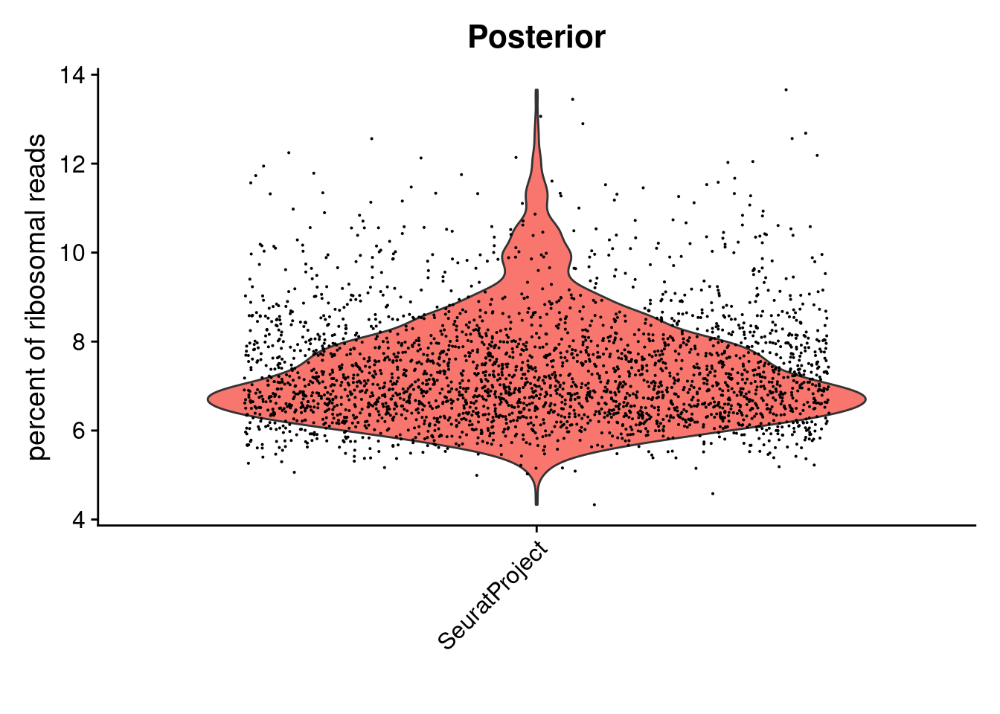
SpatialFeaturePlot(seu2, features = "percent.rp") + labs(title = name2)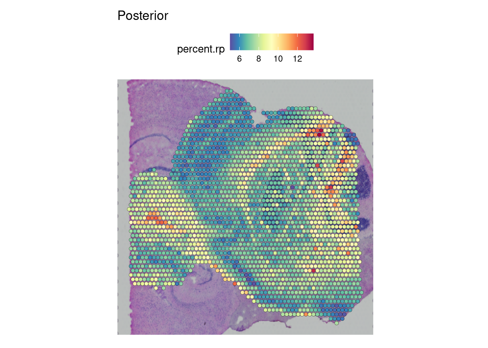
Filtering
Identifying low-quality spots
Remove spots with less than 500 unique feature counts remove spots with >=32% mitocondrial counts
You must judge for yourself based on your knowledge of the tissue and the above graphics.
seu.filt1 <- seu1[, seu1$nFeature_Spatial > 500 & seu1$percent.mt < 32]Warning: Not validating Seurat objectsseu.filt2 <- seu2[, seu2$nFeature_Spatial > 500 & seu2$percent.mt < 32]Warning: Not validating Seurat objectsGene-level QC
Plots showing the top 30 most highly expressed genes in each sample. Each row corresponds to a gene, and each boxplot corresponds to the expression of a gene (i.e. number of reads) in a single spot. The vertical line in the box indicates the median expression of each gene across all spots. Genes are sorted in decreasing order based on median expression.
Sometimes individual genes may have very high expression and should be removed to avoid problems at the normalization step. In particular, look out for MALAT1 and other nuclear lincRNAs, mitochondrial genes (prefix mt-), ribosomal proteins (starting with rp), actin and hemoglobin.
C <- seu.filt1[["Spatial"]]$counts
C@x <- C@x / rep.int(colSums(C), diff(C@p))
most_expressed <- order(Matrix::rowSums(C), decreasing = TRUE)[30:1]
as.matrix(C[most_expressed, ]) |>
t() |>
as.matrix() |>
boxplot(
cex.axis = 0.5,
cex.lab = 0.8,
cex = 0.1,
las = 1,
xlab = "% total count per cell",
col = (scales::hue_pal())(30)[30:1],
horizontal = TRUE
)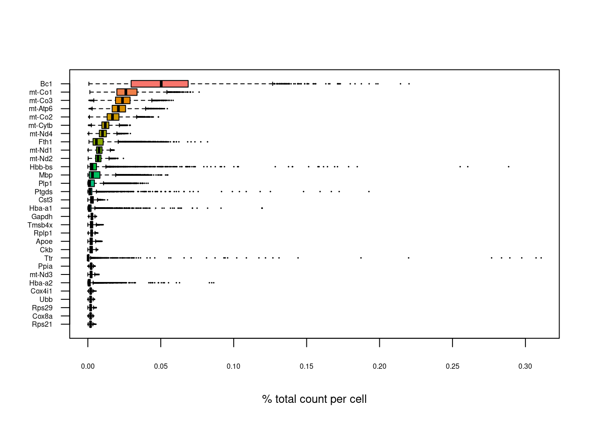
C <- seu.filt2[["Spatial"]]$counts
C@x <- C@x / rep.int(colSums(C), diff(C@p))
most_expressed <- order(Matrix::rowSums(C), decreasing = TRUE)[30:1]
as.matrix(C[most_expressed, ]) |>
t() |>
as.matrix() |>
boxplot(
cex.axis = 0.5,
cex.lab = 0.8,
cex = 0.1,
las = 1,
xlab = "% total count per cell",
col = (scales::hue_pal())(30)[30:1],
horizontal = TRUE
)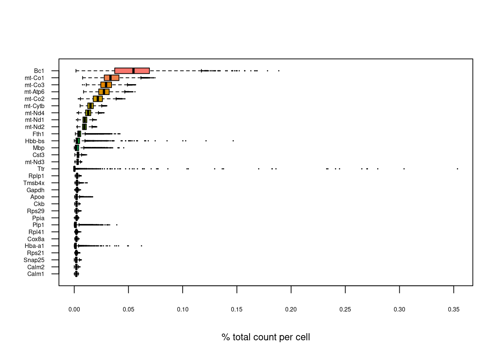
remove_genes <- c("mt-Co3", "mt-Co1",
"mt-Atp6", "mt-Cytb",
"mt-Co2", "mt-Nd4",
"mt-Nd2", "mt-Nd1")remove_feature <- rownames(seu.filt1) %in% remove_genes
seu.filt1 <- seu.filt1[!remove_feature, ]Warning: Not validating Seurat objectsremove_feature <- rownames(seu.filt2) %in% remove_genes
seu.filt2 <- seu.filt2[!remove_feature, ]Warning: Not validating Seurat objectsStatistics after filtering
stats <- c(dim(seu1)[2], dim(seu.filt1)[2])
stats <- rbind(stats, c(dim(seu2)[2], dim(seu.filt2)[2]))
colnames(stats) <- c("Before filtering", "After filtering")
rownames(stats) <- c(name1, name2)
stats Before filtering After filtering
Anterior 3293 3280
Posterior 2825 2798Library size versus detected genes after filtering
FeatureScatter(seu.filt1,
feature1 = "nCount_Spatial",
feature2 = "nFeature_Spatial") +
labs(title = name1) +
NoLegend() 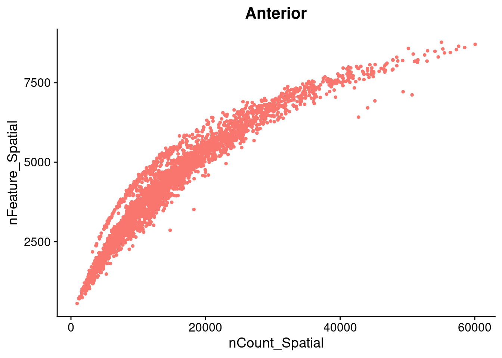
VlnPlot(seu.filt1, features = "nFeature_Spatial") +
labs(title = name1, y = "nFeature_Spatial", x = "") +
NoLegend() Warning: Default search for "data" layer in "Spatial" assay yielded no results;
utilizing "counts" layer instead.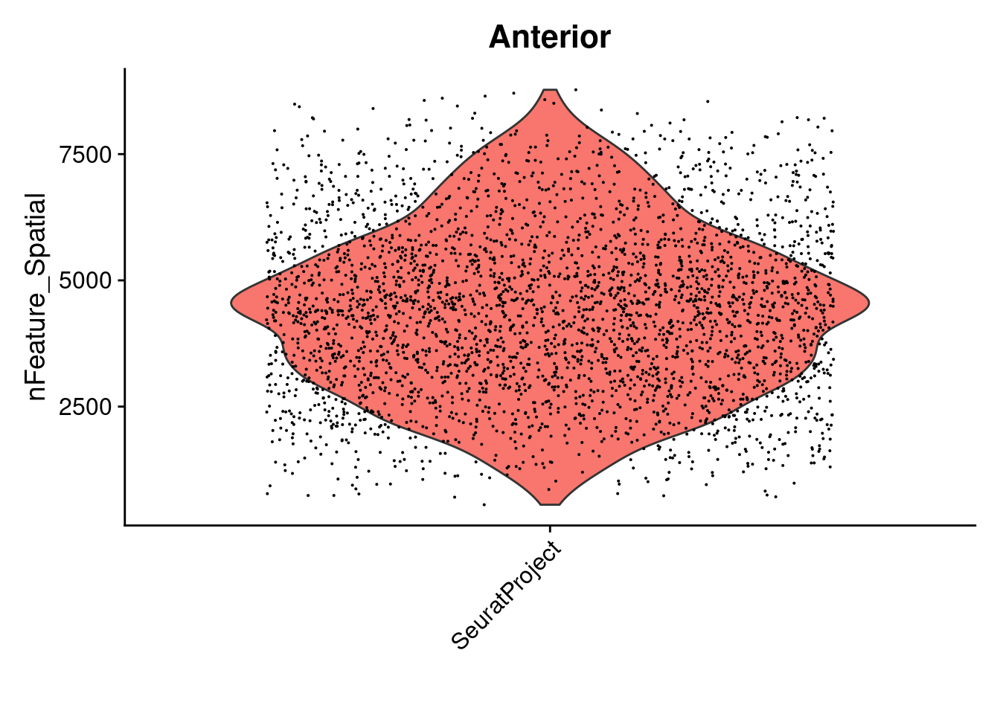
FeatureScatter(seu.filt2,
feature1 = "nCount_Spatial",
feature2 = "nFeature_Spatial") +
labs(title = name2) +
NoLegend() 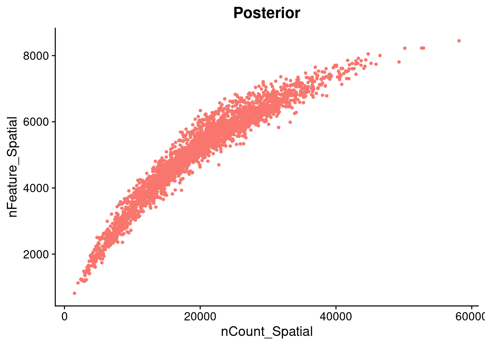
VlnPlot(seu.filt2, features = "nFeature_Spatial") +
labs(title = name2, y = "nFeature_Spatial", x = "") +
NoLegend() Warning: Default search for "data" layer in "Spatial" assay yielded no results;
utilizing "counts" layer instead.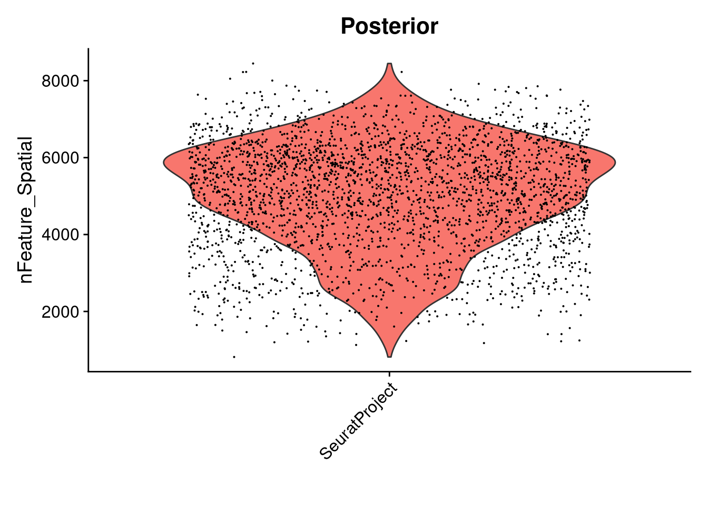
Normalization
Biological heterogeneity in spatial RNA-seq data is often confounded by technical factors including sequencing depth. The number of molecules detected in each spot can vary significantly between spots, even within the same celltype. Note that the variance in molecular counts/spot can be substantial for spatial datasets, particularly if there are differences in cell density across the tissue.
Therefore, we apply sctransform normalization (Hafemeister and Satija, Genome Biology 2019), which builds regularized negative binomial models of gene expression in order to account for technical artifacts while preserving biological variance. During the normalization, we also remove confounding sources of variation (mitochondrial and ribosomal mapping percentage).
Before normalization
VlnPlot(seu.filt1, features = "nCount_Spatial", pt.size = 0.1) +
labs(title=name1, y="nCount_Spatial", x="") +
NoLegend() Warning: Default search for "data" layer in "Spatial" assay yielded no results;
utilizing "counts" layer instead.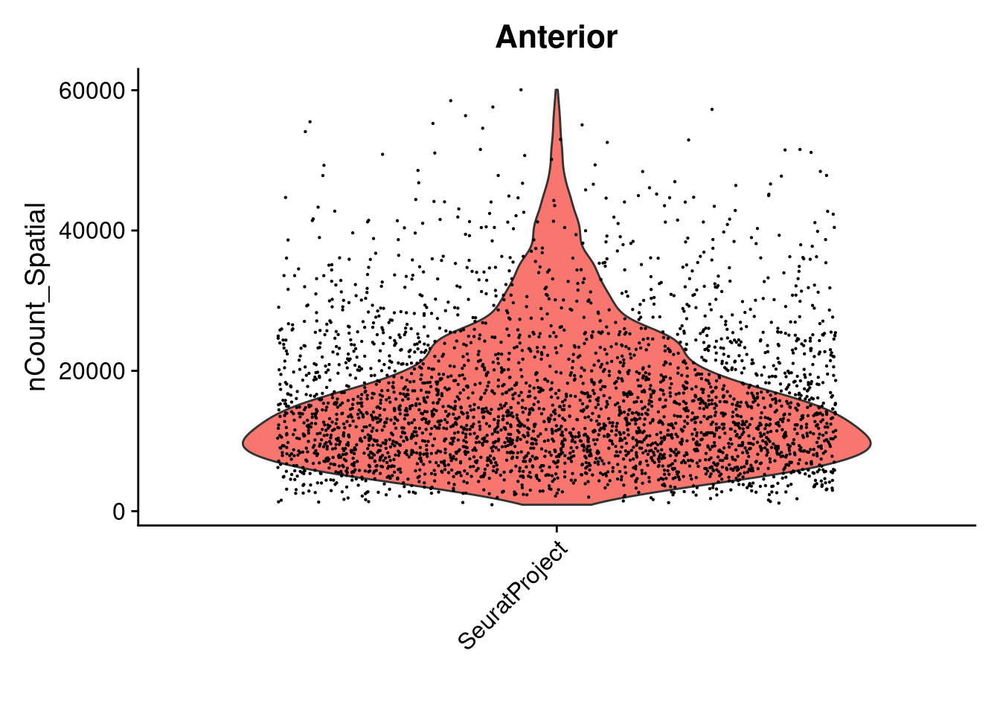
SpatialFeaturePlot(seu.filt1, features = "nCount_Spatial") +
labs(title = name1) +
theme(legend.position = "right")
VlnPlot(seu.filt2, features = "nCount_Spatial", pt.size = 0.1) +
labs(title=name2, y="nCount_Spatial", x="") +
NoLegend() Warning: Default search for "data" layer in "Spatial" assay yielded no results;
utilizing "counts" layer instead.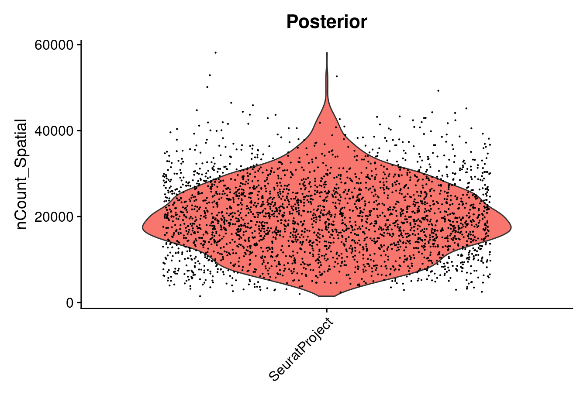
SpatialFeaturePlot(seu.filt2, features = "nCount_Spatial") +
labs(title = name2) +
theme(legend.position = "right")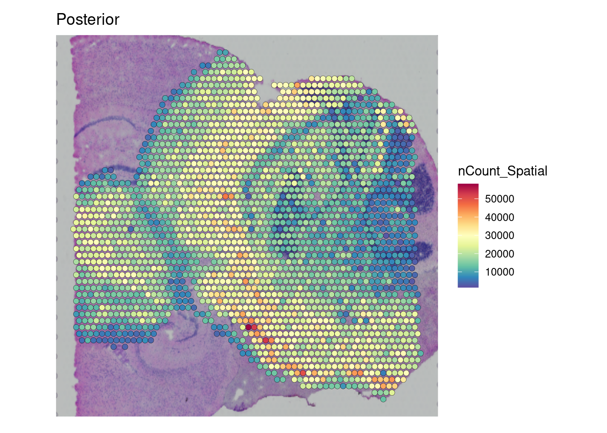
After normalization
Apply sctransform normalization: - Transformed data will be available in the SCT assay, which is set as the default after running sctransform - During normalization, we can also remove confounding sources of variation, for example, mitochondrial mapping percentage
seu.norm1 <- SCTransform(
seu.filt1,
assay = "Spatial",
vars.to.regress = c("percent.mt", "percent.rp"),
verbose = FALSE
)Warning: replacing previous import 'S4Arrays::makeNindexFromArrayViewport' by
'DelayedArray::makeNindexFromArrayViewport' when loading 'SummarizedExperiment'seu.norm2 <-
SCTransform(
seu.filt2,
assay = "Spatial",
vars.to.regress = c("percent.mt", "percent.rp"),
verbose = FALSE
)
saveRDS(seu.norm1,
paste0(analysisFolder, "/normalized_", name1, ".rds"))
saveRDS(seu.norm2,
paste0(analysisFolder, "/normalized_", name2, ".rds"))
VlnPlot(seu.norm1, features = "nCount_SCT", pt.size = 0.1) +
labs(title =
name1, y = "nCount_Spatial", x = "") +
NoLegend()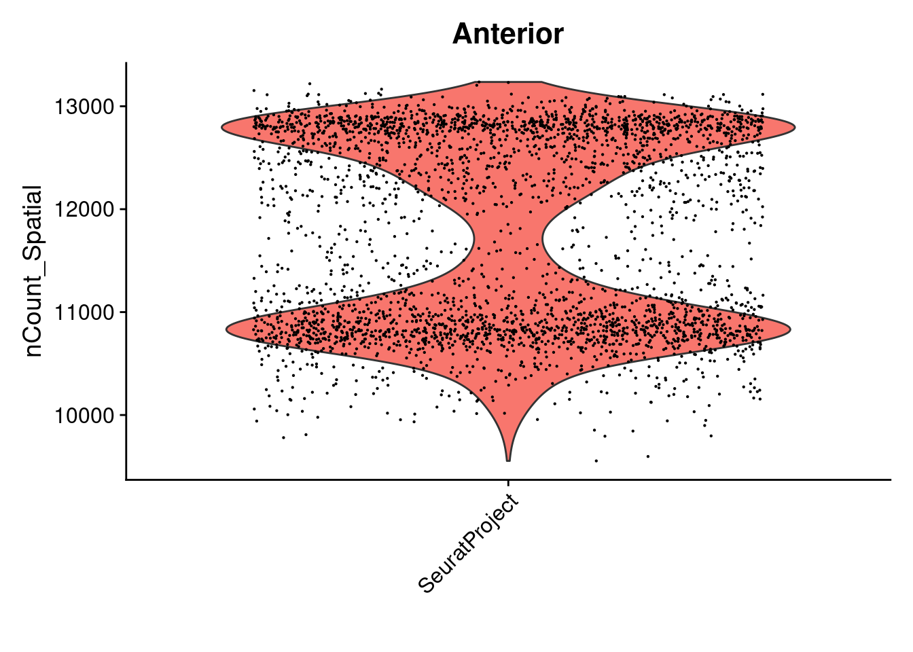
SpatialFeaturePlot(seu.norm1, features = "nCount_SCT") +
labs(title = name1) +
theme(legend.position = "right")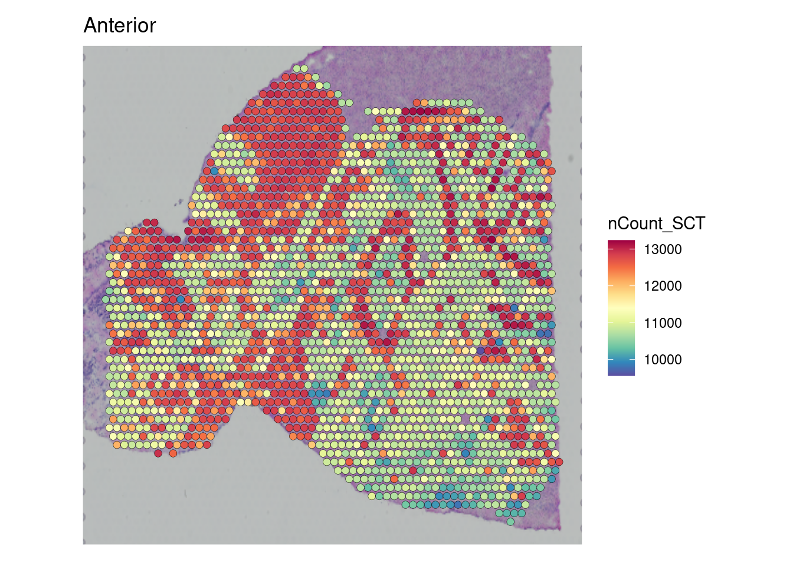
VlnPlot(seu.norm2, features = "nCount_SCT", pt.size = 0.1) +
labs(title =
name2, y = "nCount_Spatial", x = "") +
NoLegend()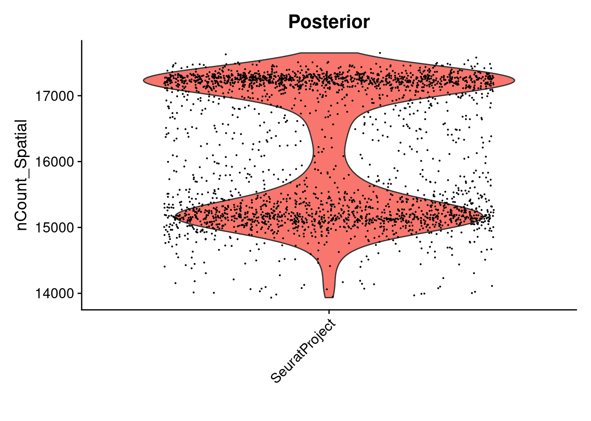
SpatialFeaturePlot(seu.norm2, features = "nCount_SCT") +
labs(title = name2) +
theme(legend.position = "right")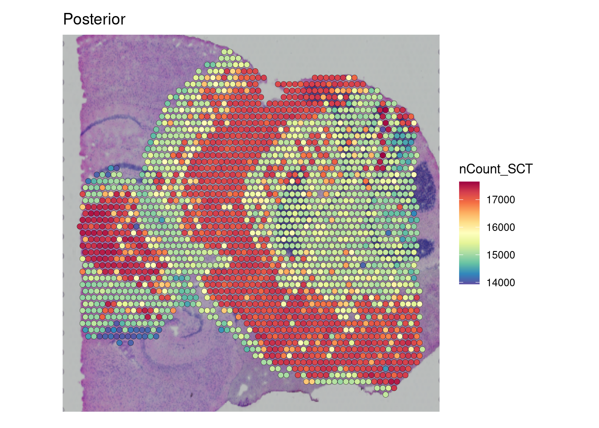